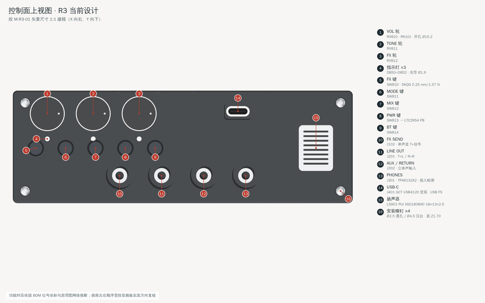
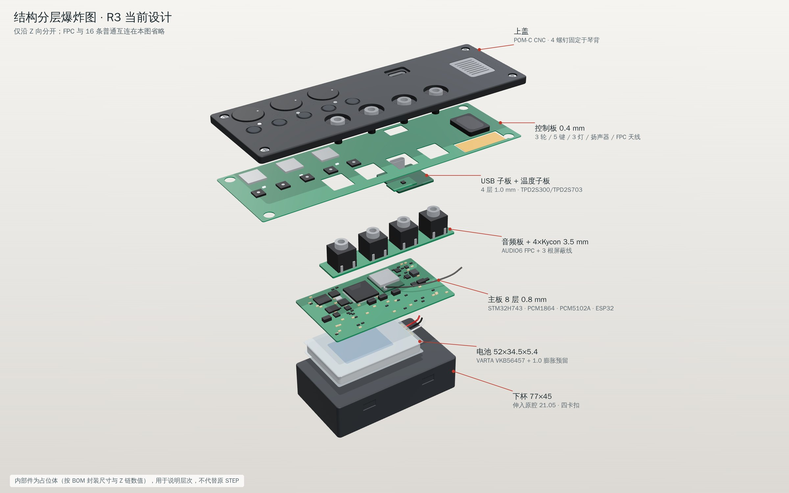
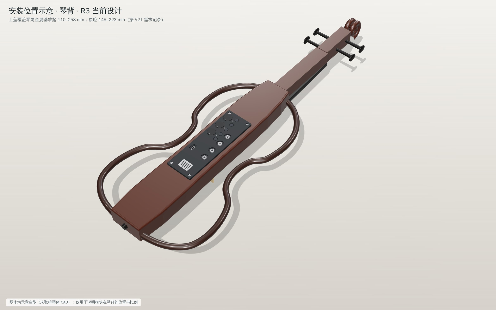
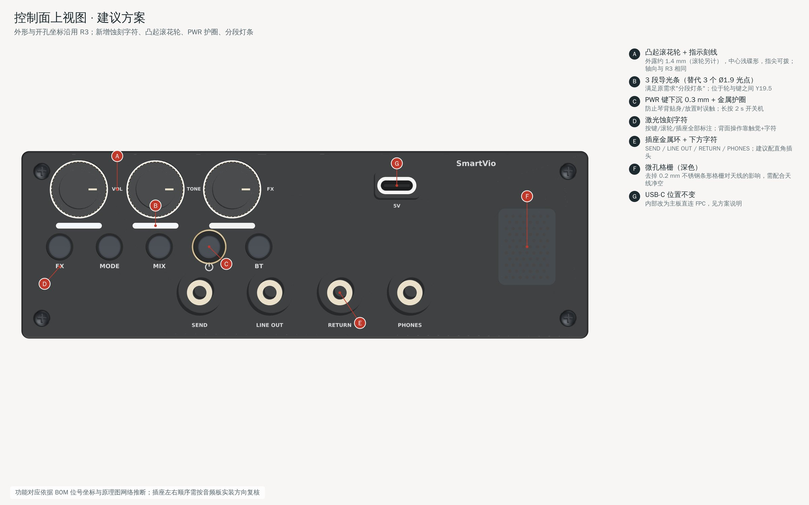

SmartVio R3 · 电子小提琴模块 · 资料审核与设计建议
SmartVio R3 审核报告
审核日期 2026-10-13 · 输入：方案与缺项说明 6 页、24 页原理图、机械图 M-R3-01/02 及装配渲染、5 板 4 FPC 审查图 9 页、首样工作簿 8 张表（333 行候选 BOM）· 主板 bd2740bea32d… · 原理图源 b29b1b0dc3a8…
结论：五份资料之间的数量、尺寸和位号大体一致，可以继续做工程评审和供应商 DFM。但原理图里有 2 处设计错误必须先改：充电温度窗口比较器的两个输入接反（会导致任何温度下都无法充电），以及关机状态约 0.48 mA 的漏电（约 3 个月把电池放空）。另有 9 项高风险问题建议在投板前处理。本报告里的效果图和建议方案只用于评审，没有改动任何原设计文件。
2必须修改
9高风险
14中低风险 / 建议
8文件一致性
11核对通过
1 核对通过的部分
以下各项我逐一重算或交叉比对过。原理图网表是从 PDF 的逐脚网络标签自动还原的（每个引脚对应一个网络名），不是只看页面。
| 项目 | 核对结果 | 依据 |
|---|
| 原理图网表 | 319 个元件、1087 个引脚、221 个网络；单端悬空网络 0、漏标引脚 0、显式 NC 87 个 | 与工作簿"319 原理图元件"一致 |
| BOM 数量 | 333 = 319 原理图元件 + 14 个 H_* 板间焊盘端点；分板 284 / 24 / 15 / 6 / 3 + 外置 RT1921 | 候选 BOM 表与"当前版本"表 |
| Z 链 | 3.85 + 21.05 = 24.90；Kycon 端子底 −11.05 到主板顶 −11.75 净 0.70（要求 ≥ 0.35）；电池 5.4 + 膨胀 1.0；杯底 0.75，逐项相加无误 | M-R3-02 连续 Z 链表 |
| 开孔坐标 | 矢量实测：轮孔 Ø15.2 @ X15/35/55 Y10；键 Ø7.2 @ Y25；灯 Ø2.1 @ Y21；插座 Ø12 @ Y37；USB 凹位 12×7.4 @ X98 Y9；螺孔 Ø2.5 / Ø4.5 @ (5.3, 5.3) | 与图注、控制板 BOM 位号坐标完全对应 |
| 下杯位置 | X35.5–112.5，两端各约 36 mm，居中 | 与 V21 记录"下沉舱距两端各 36"一致 |
| 互连计数 | W07–W09（3）+ W25–W33（9）+ S1–S4（4）= 16；FPC 6+6+3+6 = 21；合计 37 | 待闭合互连表、FPC 审查图 |
| 电源计算 | V3D = 0.8 × (1 + 312k/100k) = 3.30 V；充电电流约 0.45 A（R501 2 kΩ）；输入限流约 1.0 A（R502 1.5 kΩ）；USB 欠压/过压约 4.3 V / 5.7 V | 按器件典型参数估算 |
| I²C 地址 | ADS1115 0x48、TMP117 0x49、PCM1864 0x4A（经 TMUX1511 隔离支路），无冲突 | A15 / A28 / A29 页 |
| 引脚映射抽查 | PCM1864、PCM5102A、BQ24074、MAX98357A、TPS3700、USBLC6、STM32H743 LQFP100 电源与 VCAP 脚序与标准封装一致 | 仍建议对原厂规格书逐脚复核 |
| 扬声器空间 | LS901 为 18×13×2.5 mm（工作高 2.8），控制板顶 Z0.5 到上盖顶 Z3.8 之间可放下 | V26 扬声器选型记录 |
| 默认安全态 | 充电默认禁用（CE 上拉）、音频电源/耳放/功放/端口默认关、ESP32 默认复位、USB 数据默认断开 | 与"充电 HOLD、制造 HOLD"描述一致 |
2 问题清单
按严重程度分四组。每条写明依据（页码、位号、网络名）、后果和建议改法。
必须修改
设计错误
A1
充电温度窗口比较器 U1921（TPS3700）两个输入接反，任何温度下都会禁止充电
- 依据
- 原理图第 24 页 A33：
INA+(脚3) = CELL_NTC_SENSE，INB−(脚4) = NTC_COLD_DIV。TPS3700 的 INA+ 高于 0.4 V 时 OUTA 拉低，INB− 低于 0.4 V 时 OUTB 拉低；两路输出并联在 CHARGE_GATE 上。NTC_COLD_DIV = 0.388 × CELL_NTC_SENSE（R1921 158k / R1922 100k）。
- 后果
- 允许充电需要 V < 0.40 V 且 V > 1.03 V，无解。CHARGE_GATE 恒为低 → Q1601 恒关 → BQ24074 CE 恒高 → 永远不充电。方向是安全的，但会被误判成固件 HOLD。
- 改法
- 对调：
INA+ ← NTC_COLD_DIV，INB− ← CELL_NTC_SENSE，PCB 交换两条走线。对调后窗口为 0.40–1.03 V，对应 10 kΩ/B3435 NTC 约 7–40 °C，正好是网络名 NTC_COLD_DIV 表达的设计意图。
图 A1：NTC 分压电压与温度。两个阈值按 TPS3700 的 0.40 V 基准和 R1921/R1922 分压换算。
A2
关机状态漏电约 0.48 mA，按 1000 mAh 估算约 87 天把电池放空
- 依据
- A28 第 20 页：TMUX1511 只隔离了缓冲器，分压器本身常接在电源上；A13/A24：LTC2954-1 关机时 EN 为开漏拉低，上拉 R1103 33 kΩ 接 SYS。无 USB 时 BQ24074 的 OUT 经内部 FET 接电池，所以 SYS ≈ 电池电压。
- 后果
- 长期存放或运输中电池深度放电，电芯保护板切断或容量损伤，用户拿到手无法开机。
- 改法
- 分压器改为 MΩ 级（后面已有 OPA4330 缓冲，1.5 MΩ / 1 MΩ 即可，< 2 µA），或在分压器高端加受控开关；R1103 改 1 MΩ，同时 R1304 改 10 MΩ，保证 SYS = 3.0 V 时 TPS63070 EN 仍 > 2 V（需核对 EN 输入漏电）。目标关机电流 < 30 µA，首样实测。
| 关机时的耗电支路（电池 4.2 V） | 电流 |
|---|
| R1705 + R1706（PACK_PLUS 分压 25 kΩ） | 168 µA |
| R1709 + R1710（SYS 分压 25 kΩ） | 168 µA |
| R1103 33 kΩ → LTC2954 EN（关机时拉低） | 127 µA |
| IC 静态电流（LTC2954、TPS3700、BQ24074 电池侧等，估） | 约 15 µA |
| 合计 | 约 0.48 mA |
高风险
建议在投板前处理
B1
没有 USB-C 供电能力识别，1.0 A 输入限流可能超出普通端口
- 依据
- A13：CC 只有 5.1 kΩ Rd，没有任何电路读取 CC 电压；BQ24074 ILIM 档（EN2=1, EN1=0）约 1.03 A。
- 后果
- 固件无法判断对端是默认 USB（500/900 mA）、1.5 A 还是 3 A，打开 ILIM 档就可能让电脑 USB 口过流。这也是工作簿里"USB 实际授权"无法闭合的根本原因。
- 改法
- 在 TPD2S300 之后把 CC1/CC2 经分压接到 MCU 两路 ADC（判断 Rp 档位），或改用 USB-C 受电控制器。默认档保持 100 mA/500 mA。
B2
TPD2S300 由 V3D 供电，关机或电池耗尽时 Rd 是否仍然有效需要确认
- 依据
- A25 第 17 页：U1401 VPWR/VM 接 V3D；V3D 只在开机或 USB_5V_SAFE 存在时才有电。
- 后果
- C-to-C 充电器必须先看到 Rd 才会输出 VBUS。若 TPD2S300 断电时把 CC 通路断开，就形成死锁：没有 Rd → 没有 VBUS → V3D 不上电 → 仍没有 Rd。关机状态或电池耗尽时插 C-to-C 充电器将完全没反应（C-to-A 线不受影响）。
- 改法
- 按规格书"Dead Battery"章节确认；不支持时在连接器侧加死电池 Rd 通路，或由 VBUS 经小 LDO 给 VPWR 供电。首样用 C-to-C 充电器在关机和电池耗尽两种状态实测。
B3
模拟电源 V3A 与 ESP32 射频共用 V3LOAD 节点，仅隔一个磁珠
- 依据
- A21 第 13 页：
FB1101（120 Ω@100 MHz）从 V3LOAD 取电得到 V3A；V3LOAD 同时供 ESP32、PCM1864/PCM5102A 数字核。V3A 供 ADC、DAC、全部运放和耳放。
- 后果
- 磁珠在音频频段几乎没有阻抗。蓝牙 625 µs 时隙的突发电流（1.6 kHz 及谐波）会直接调制模拟电源，耳机和线路输出出现可闻的"嗡嗡"声；TPS63070 的开关纹波也只靠磁珠和 22 µF 滤除。
- 改法
- ESP32 改由 V3D 上独立负载开关供电；V3A 用独立低噪 LDO（从 SYS 取电，3.0–3.3 V）。见方案图 P1。
B4
7 个音频口串 PhotoMOS 继电器：开启时约 50 mA 常耗，并串在耳机输出里
- 依据
- A22 第 14 页：K1201–K1207（AQY221R6V/R2V），每路 LED 经 270 Ω 接 V3D，约 7.5 mA；K1201/K1202 串在 TPA6132A2 输出与耳机之间。
- 后果
- 端口开启时约 50 mA（约 0.17 W）持续耗电；PhotoMOS 导通电阻为欧姆级且随电流变化，对 16–32 Ω 耳机造成音量损失、输出阻抗升高和失真。
- 改法
- 耳机路径去掉继电器，由 TPA6132A2 的 EN 和插入检测控制；线路级端口用隔直电容 + 泄放电阻 + ESD 已足够，如确需"默认断开"，改用支持负电压信号的低导通电阻模拟开关。
B5
音频口 ESD 器件放在主板上，离插座太远
- 依据
- BOM：D1201–D1207 在主板背面（X27–33, Y19–25），插座 J102/J201/J202/J301 在音频板。
- 后果
- 静电先经插头进入音频板，再沿 AUDIO6 FPC 和屏蔽线到达 TVS，路径电感使钳位失效，静电会先打到线束和沿途器件。
- 改法
- TVS 移到音频板、紧贴插座引脚，并给音频板地留低阻抗回路（见 B6 的 FPC 方案）。
B6
USB 子板的 9 根散线：保护前的 VBUS 走线束、只有 1 根地、U90 线实际装不进去
- 依据
- 待闭合互连表：W33
VBUS_RAW 从 USB 子板到主板 eFuse；W25 是唯一 GND；W26/W27 要求 U90 屏蔽双绞，外径 3.2 mm、最小弯曲半径 10 mm。USB 子板挂在上盖托架下，与主板之间只有约 6–11 mm 高度。
- 后果
- 线束破皮或压伤短路发生在 eFuse 之前，只能靠充电器自身限流；充电电流、ESD 电流共用一根 26 AWG 地线；按规格的 U90 线在这个空间无法弯折。STM32H743 的 USB 是全速 12 Mbps，并不需要 90 Ω 屏蔽双绞。
- 改法
- eFuse 移到 USB 子板（VBUS_RAW 不出板），TMP117 并入同一子板，子板与主板之间改为 1 条约 16 芯 FPC（含 4 根地、2 根 5 V）。可取消 W25–W33 与 S1–S4 共 13 根散线。见方案图 P3。
B7
PLAY 音频总线四方并联且跨电源域，没有硬件隔离
- 依据
PLAY_DATA / PLAY_BCK / PLAY_FS 同时接 MCU SAI2（经 33 Ω）、PCM5102A、MAX98357A 和 ESP32 IO22/IO26/IO25。ESP32 与 PCM5102A 在 V3LOAD 域，MCU 在 V3D 域；PCM1864 的 SCKI/BCK/LRCK 同样由 V3D 域驱动。- 后果
- ESP32 固件一旦把这三个脚设为输出（I²S 主机、误配置）就与 MCU 对打；V3LOAD 关断时 MCU 继续驱动总线，会经输入保护二极管反灌 ESP32 和编解码器。
- 改法
- ESP32 一侧每根线串 1 kΩ，或加由 V3LOAD 供电、带 OE 的缓冲器；固件把"V3LOAD 关断 → SAI 脚高阻"作为硬约束写入启动检查。
B8
FPC 天线紧贴金属格栅、扬声器磁铁和无滤波功放线
- 依据
- 控制板天线开窗 X113.6–140.6 / Y35.3–45.6；不锈钢格栅 X124.5–139.5 / Y15.0–35.0，两者相距约 0.3 mm；扬声器在格栅下方；MAX98357A 的 BTL 无滤波输出经 COVER6 FPC 走到上盖。
- 后果
- 天线失谐、效率下降，蓝牙距离与稳定性变差；功放 PWM 边沿耦合到天线与滚轮、按键线。模块在琴背，演奏时贴近人体，射频余量本来就小。
- 改法
- 格栅改非金属或深色微孔金属并缩小，天线周边留 ≥ 5 mm 无金属区；功放输出加铁氧体 + 电容 EMI 滤波；装壳后测 VSWR 和三方向 RSSI。
B9
四弦独立拾音仍未实现（资料已列为 P0）
- 依据
- J101 两线单路；PCM1864 只用 VINL1/VINR1/VINL3 三路，第 4 路 ADC 闲置；需求至少 6 路同时采集。
- 后果
- 四弦独立 EQ、多音识别和评分无法在硬件上成立，现有算法只能用混合单路信号。
- 改法
- 见方案图 P2：5 芯拾音接口 + 4 路高阻缓冲 + 第二颗 PCM1864，两颗以 TDM 合成 8 通道送 SAI1 一根数据线。前提是先确定拾音器型号。
中低风险
建议与需实测确认
C1
TPS63070 的 PG（V3_PG）只接了上拉，没有送到 MCU 或负载开关
- 改法
- 接 MCU 输入，或作为 TPS22918 ON 的与条件，避免 V3D 未稳定就打开音频域。
C2
几颗大尺寸 C0G 电容可降规格
- 依据
- C1303 0.47 µF C0G 为 2220 封装（约 5.7×5.0 mm），只用于 LTC2954 关机定时；C101、C811、C830–C832 等 0.1 µF C0G 为 1206。
- 改法
- 定时与复位电容改 0603/0805 X7R；滤波保留 C0G 但用 0805。节省主板面积与成本。
C3
扬声器没有背腔
- 依据
- LS901 直接放在 0.4 mm 控制板上，下面就是琴背木面；PUI 的额定声压按约 1 cc 背腔给出；V21 记录也要求"不在喇叭背面垫 PCB"。
- 改法
- 控制板在扬声器下开孔，与下杯内空腔或专用小腔连通，并留泄气路径；样机测声压。
C4
三个滚轮几乎与面板齐平，指尖难以拨动；与 V21"滚轮轴平行于面板"的记录不一致
- 依据
- 顶视矢量：Ø14.2 平盘外露于 Ø15.2 孔，周边间隙仅 0.5 mm。
- 改法
- 确认 RK10J 的实际操作方向；建议凸起滚花外圈 + 指示刻线（效果图方案 A）。
C5
按键帽尺寸标注自相矛盾，且缺少防脱说明
- 依据
- 图注"按钮帽 Ø6；孔 Ø5.2；法兰 Ø6"，而顶视只有 Ø7.2 与 Ø6.0 两个圆。帽 Ø6 大于孔 Ø5.2，无法从下方穿出。
- 改法
- 补一张按键剖面，标清帽、法兰、凹位直径和装配方向；模块在琴背，面板经常朝下，帽须有卡扣或胶固防脱。
C6
面板没有任何字符；"分段灯条"在 R3 变成了 3 个 Ø1.9 光点
- 依据
- V26 已确认约束要求"带字符标签的 FX/MODE/MIX/BT/PWR 按键、分段灯条"。
- 改法
- 激光蚀刻或移印全部字符；灯改 3 段导光条（效果图方案 B、D）。
C7
TMP117 的实际位置与 A29 页标题不符
- 依据
- A29 标题为"电池表面独立测温"，但 TMP117 在上盖传感器托架的小板上，离电池 > 10 mm 且隔着主板，实际测的是上盖和 USB 附近温度。电池表面温度由 A33 的 RT1921 负责。
- 改法
- 改标题为"上盖/板级温度"，或把 TMP117 贴到电池；固件里的温度门限按实际测点重定。
C8
琴背平面度、曲率与螺钉边距都还是假设
- 依据
- 0.4 mm 控制板直接贴木面并作为按键 1–2 的背撑；螺孔距上盖边 5.3 mm，琴柱最窄约 50 mm 时离木边只有约 5.8 mm；6 mm 螺钉入木约 4.3 mm。
- 改法
- 实测琴背 148 mm 范围的平面度和宽度；加可压缩垫；必要时改螺钉规格或预埋。
C9
键 3（X36）和轮 2（X35）正好跨在原腔边缘（X35.5）
- 改法
- 背撑一半在木面、一半在杯壁和 7 mm 梁上，腔位实测后再确认按键手感一致。
C10
琴背上的竖向插头会顶向演奏者身体，PWR/BT 键容易误触
- 改法
- 说明书和配件统一用直角 3.5 mm 插头；PWR 键下沉加护圈、长按 2 s 生效（效果图方案 C）。
C11
插着 USB 时无法真正关机
- 依据
- USB_5V_SAFE 经 R1303/D1302 直接拉高 TPS63070 EN。
- 改法
- 固件需要"充电显示 / 假关机"状态，关闭音频、射频和灯，只保留充电管理。
C12
固件按 64 MHz 主频做实时预算，四弦 DSP 需要更高主频
- 依据
- 测量表 B04："64MHz×64/48000 = 85333 周期"，且 D-Cache 关闭。
- 改法
- 四弦独立处理前把 H743 提到 400–480 MHz 并开 Cache，重新做功耗与温升预算。
C13
电池包内 NTC 规格未写明
- 改法
- BQ24074 的 TS 门限按 10 kΩ / B≈3435 设计，需确认 VARTA VKB56457 包内 NTC 型号；不符时调整 TS 网络。
C14
主板 8 层 0.8 mm、0.15 mm 孔 / 0.35 mm 焊盘，成本高、可选板厂少
- 改法
- 完成 B3/B4/B6 的简化后评估 6 层方案；厚度若需 1.0 mm，从 Z 链里另找 0.2 mm。
文件一致性
资料本身的错误或缺口
D1
版本命名混用
- 依据
- 原理图图框标题为"SmartVio V27 - Native engineering capture"，页脚写 R3；PCB 文件名有 main-r3、usb/sensor-r2-synced、audio-r2-final、cover-r2-final4、keys6-r3；工作簿的互连源是"R2_逐线接线表.json"。
- 改法
- 统一改为 R3，图框里写对应文件哈希。
D2
原理图缺 A31 页
- 依据
- 目录从 A30 直接到 A32。
- 改法
- 注明删除原因，或补回。
D3
原理图没有画分板连接器
- 依据
- 14 个 H_* 板间端点只存在于 PCB 和 BOM，原理图是一张逻辑总图，无法从原理图核对 37 条板间互连和每块板的器件归属。
- 改法
- 补一页"板间互连"原理图，每个 H_* 端点逐脚列出网络。
D4
机械图没有琴头/琴尾方向，也没有与琴体基准的关系
- 依据
- M-R3-01/02 只有 X/Y 坐标；V21 曾统一"控制面正视琴头在左"，并给出上盖覆盖琴尾金属基准起 110–258 mm。
- 改法
- 图上加琴头箭头和"X=258−u"换算。本报告效果图按琴头在 X=0 一侧绘制，需要你确认。
D5
5 个器件在原理图里只写功能，不写型号
- 依据
- U1901（TPS22918）、U1902（TMUX1511）、U1921（TPS3700）、U1922（LM4040A25）、D1301/D1302（BAS116）的型号只在 BOM 中出现。
- 改法
- 原理图值栏写型号，功能写到注释。
D6
数值格式与放置页错误
- 依据
- C812/C813 写作"3e-05uF"（应为 30 pF）；R1715 在原理图里缺 10 MΩ 阻值（BOM 有）；R826（PWR_PB 上拉）画在 A11 线路输出页。
- 改法
- 修正数值格式，R826 移到 A24。
D7
A-A 剖面没有视向箭头
- 依据
- "Y=37，朝后看"只有文字，剖面中插座和电池的 X 位置无法与上视图直接对应。
- 改法
- 上视图加剖切线与箭头。
D8
仓库里 V26 资料与 R3 并存
- 依据
- 仓库检查点写"主板 149 项未连接"，R3 写"已从 15 降为 0"，两者是不同版本，不矛盾，但容易混用。
- 改法
- R3 原生文件入库后，在仓库根目录标明 R3 为当前基线。
3 R3 当前设计效果图
按 M-R3-01/02 的矢量尺寸重建三维模型（上盖开孔、下杯、Z 链），内部件按 BOM 封装尺寸做占位。配色和材质为示意；琴体没有 CAD，整琴图只说明位置和比例。
 安装状态：上盖 148 × 49 mm，外凸 3.85 mm；三轮、五键、三灯、四个 3.5 mm 插座、USB-C、扬声器格栅、四颗安装螺钉。
安装状态：上盖 148 × 49 mm，外凸 3.85 mm；三轮、五键、三灯、四个 3.5 mm 插座、USB-C、扬声器格栅、四颗安装螺钉。

控制面上视图，1:1 按图纸坐标。功能对应来自 BOM 位号坐标和原理图网络；插座左右顺序需按音频板实装方向复核。
 含下杯：77 × 45 mm，伸入原腔 21.05 mm，总高名义 24.90 mm。
含下杯：77 × 45 mm，伸入原腔 21.05 mm，总高名义 24.90 mm。

分层：上盖、控制板、USB 子板、音频板与插座、主板、电池、下杯。

琴背位置示意：上盖覆盖琴尾金属基准起 110–258 mm，原腔 145–223 mm（据 V21 需求记录）。
4 建议方案
外部约束全部保留：上盖 148 × 49 mm、总高 ≤ 25 mm、外凸 ≤ 5 mm、原腔 78 × 47 × 22 mm 不新开、四角螺钉加卡扣、4 个 3.5 mm 插座加 USB-C、三轮五键、内置扬声器。只改错误、高风险和难装配的地方，四弦拾音做成可选装。
4.1 外观与人机
 建议方案：开孔坐标与 R3 相同，模具和琴体打孔不受影响。
建议方案：开孔坐标与 R3 相同，模具和琴体打孔不受影响。

七处变化（A–G），右侧逐条说明。
 下杯外形不变。
下杯外形不变。
 琴背位置示意。
琴背位置示意。
4.2 电源架构
图 P1：电源树对比。R3 的模拟电源 V3A 取自 V3LOAD，与 ESP32 是同一个节点（红色虚线）；建议方案把 ESP32 移到独立开关、V3A 改由 SYS 经低噪 LDO 供电，两者不再共用任何节点。
电源与充电的其他改动
- U1921 输入对调（A1）。
- 监测分压改 MΩ 级或加高端开关；R1103 → 1 MΩ、R1304 → 10 MΩ（A2），关机目标 < 30 µA。
- CC1/CC2 电压送 MCU ADC，按 Rp 档位选择 BQ24074 的 EN1/EN2（B1）。
- 确认 TPD2S300 死电池行为，必要时 VPWR 由 VBUS 经小 LDO 供电（B2）。
- TPS63070 的 PG 接 MCU（C1）。
不变的部分
- BQ24074 路径管理、0.45 A 充电电流、TPS259470 eFuse 的 UV/OV 设定。
- LTC2954 按键开关机逻辑与 KILL 握手。
- RT1921 独立电池测温链路（只改比较器接法）。
- 默认禁充、默认关音频域的安全策略。
4.3 音频输入与四弦拾音
图 P2：音频输入对比。建议方案保留原拾音和 AUX 立体声，同时给每根弦一路独立通道，满足"至少 6 路同时采集"。
输出与接口
- 去掉 7 个 PhotoMOS（B4）：耳机由 TPA6132A2 EN + 插入检测控制，线路口保留隔直、泄放和 ESD。
- ESD 移到音频板插座旁（B5）。
- PLAY 总线 ESP32 侧串 1 kΩ 或加带 OE 的缓冲器（B7）。
- MAX98357A 输出加 EMI 滤波；扬声器加背腔（B8、C3）。
四弦拾音的前提
- 先确定拾音器：每弦独立的琴桥压电或换装成品四路拾音桥，拿到电容、输出电平和接线。
- 主控提频到 400–480 MHz 并开 Cache 后再做四路 DSP（C12）。
- 未装四弦拾音的版本：ADC-A 和缓冲器不贴，板子和外壳通用。
4.4 板间互连
图 P3：板间互连对比。USB 子板与温度子板合并、eFuse 前移，音频板改一条带地的 FPC，16 根需要人工成端的散线全部取消。
4.5 实施顺序
- 你确认本方案方向，并回答第 5 节的问题。
- 改原理图：A1、A2、B1、B3、B4、B5、B7，以及四弦前端（若确认做），补"板间互连"页（D3）。
- 改结构：USB+温度子板与托架、两条新 FPC、扬声器背腔、面板字符、滚轮、PWR 护圈、导光条。
- 重新布 PCB/FPC，跑 ERC/DRC，更新 BOM、Z 链和 STEP，重出效果图核对。
- 首样按工作簿 B00–B12 分阶段上电；新增两项实测：A1 温度窗口（冷/热两点）和关机电流。
需要原生文件才能动手修改：这次上传的是 PDF 和工作簿，R3 的 KiCad 工程、STEP 和固件源码还没有收到。仓库里只有 V26 存档。
5 需要你确认的问题
Q1 安装面和方向
我按旧资料"琴背安装基准"把模块画在琴背、滚轮一端朝琴头。是否正确？哪一端朝琴头？
Q2 四弦独立拾音
是否已有指定的四路拾音器（型号、路数）？是否接受更换琴桥或加装？如果暂时不做，是否同意先在主板上预留第二颗 ADC 和 5 芯接口？
Q3 滚轮操作
保持 R3 的平盘式，还是改为效果图里的凸起滚花外圈（外露约 1.4 mm），或改成侧拨滚轮？
Q4 外观
黑色哑光面板加香槟金点缀是否接受？字符用激光蚀刻还是移印？是否需要放品牌 Logo？
Q5 续航目标
电池容量和耳机、扬声器、蓝牙三种场景各自的续航目标是多少？这决定 B3/B4 改动的优先级。
Q6 互连工艺
是否接受把 USB 子板、音频板与主板之间改为 FPC（ZIF 连接器或热压焊）？